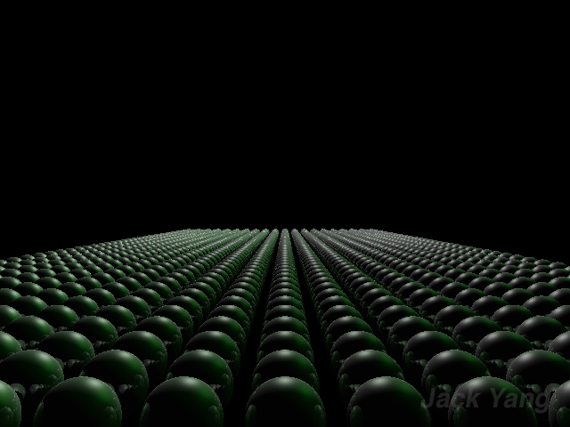
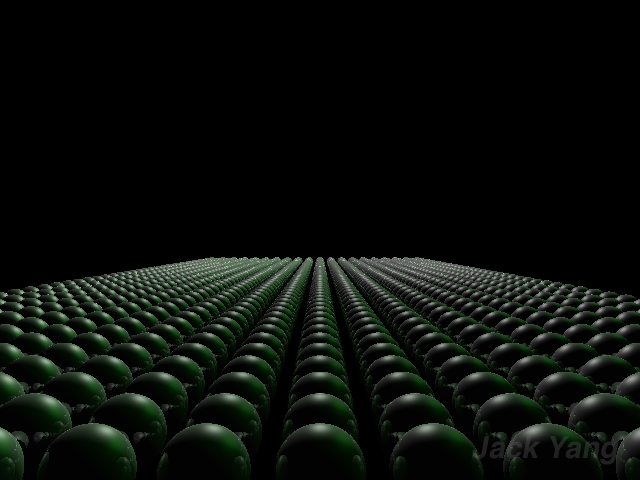
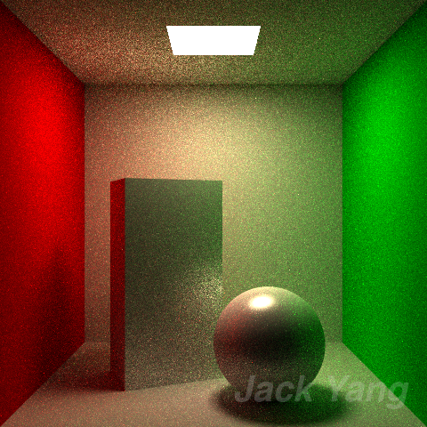

Ray Tracer Project
Computer Graphics II
UC San Diego (COGS 168)
Part 1: Basic Ray Tracer
These are some images I've rendered using a ray tracer I wrote in ~ 3 weeks combined in the UCSD classes Computer Graphics and Computer Graphics II.
The ray tracer was written for scratch, using only the GLM library for matrix calculations and FreeImage for exporting images. OpenMP was also used
to speed up ray intersection tests.
This ray tracer uses a modified version of the Blinn-Phong model as a BRDF, and supports directional and point lights.
 


Part 2: Direct Lighting
You'll notice on the above images, however, that the ray tracer is quite simplistic; Though the shadows are present, they are pitch black and have hard edges, and the light seemingly
comes out of nowhere (in the case of the Cornell Box). For part two of this project, we implemented a more realistic means of direct lighting,
in which a Monte Carlo integrator is used to integrate over the area lights to calculate shading.
Using physical quadrilateral area lights, the ray tracer computes the shading at any given intersection based not only on its distance from the light, but also from the radiance of the light,
which is calculated by integrating over the total light area for each quadlight.


Part 3: Monte Carlo Path Tracer
For part three of this project, we implemented a Monte Carlo Path Tracer to address indirect lighting. The program was edited to support setting custom samples per pixel values,
and now casts multiple rays across the area of the pixel, each ray going on to bounce and accumulate light from the surfaces in the scene.
We also implemented next event
estimation, in which rays, rather than terminating (and returning 0) on the maximum depth, will return the direct lighting of the intersection. Finally, a russian roulette based on the throughput calculated at
each intersection was used to terminate rays at various depths for a more polished final image.


Part 4: Multiple Importance Sampling
For part four of this project, we implemented different modes of importance sampling to better address a variety of material surfaces. Though sampling uniformly on the visible hemisphere (as we did before) is fine for opaque surfaces,
for near mirror surfaces we require different sampling strategies.
We also implemented a GGX BRDF function, which accounts for material roughness instead of the generic shininess we used in our Modifed Phong BRDF. Using the GGX microfacet distribution funciton, Schlick's Approximation of the Fresnel Equations, and the Smith shadow masking function,
we can achieve an image with many different material properties that vary in specularity and opacity.